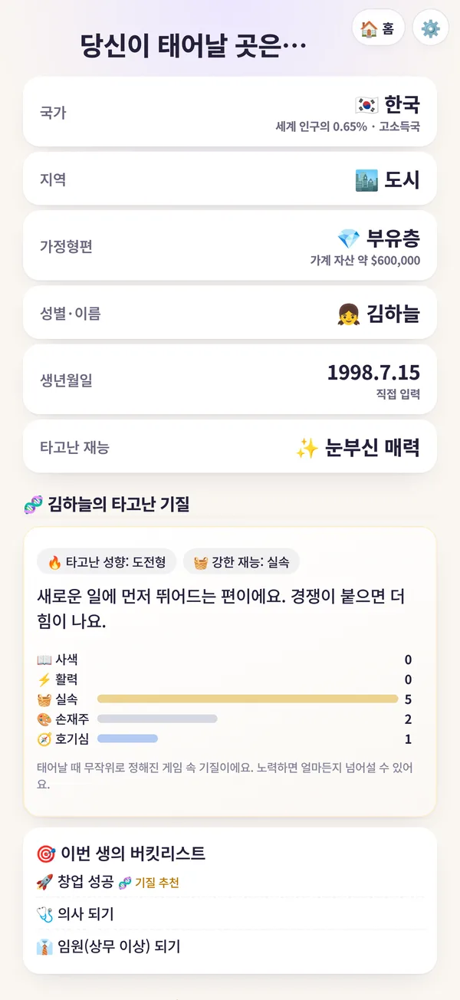
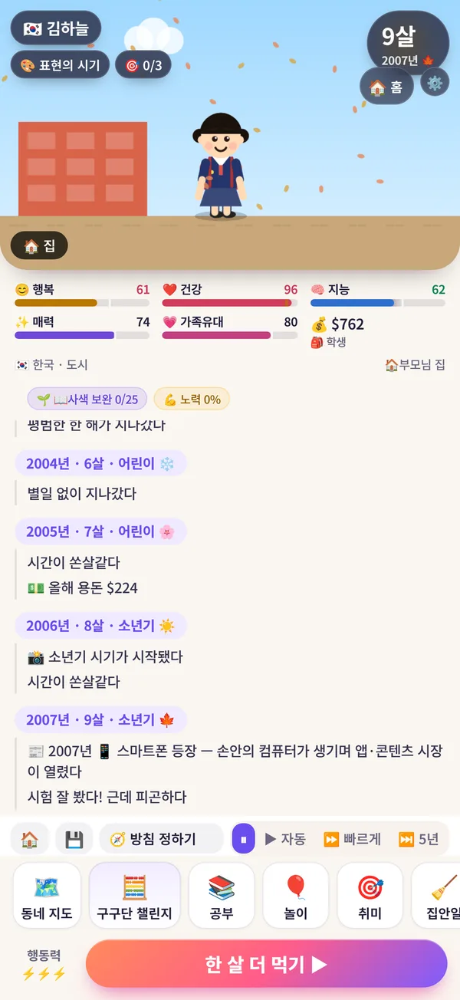
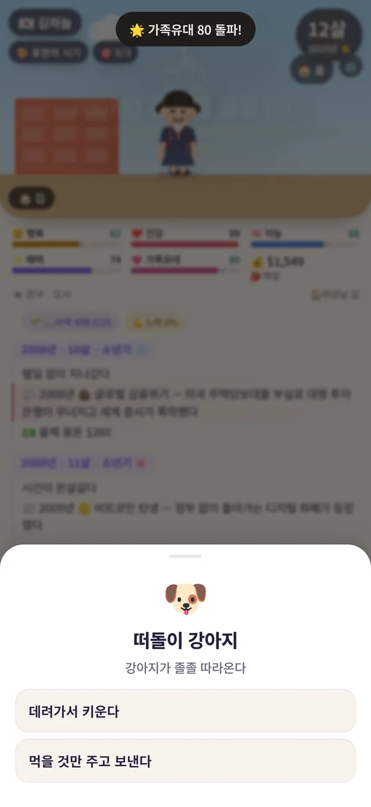
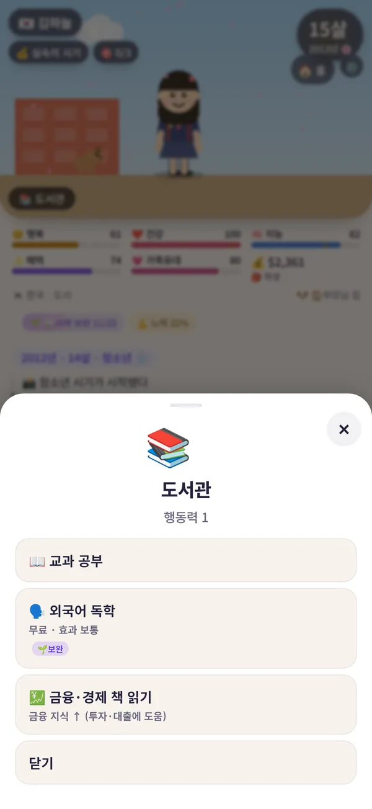
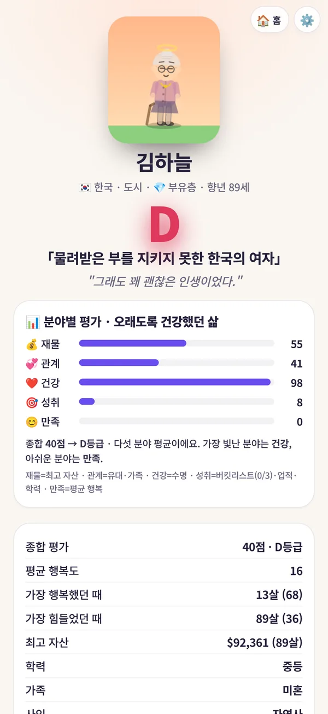

매번 다른 인생, 하나뿐인 엔딩
탄생부터 마지막 날까지 — 선택 하나하나가 10년 뒤를 바꿉니다.
매번 다른 탄생
세계 인구 비율대로 나라·도시와 농촌·가정형편·타고난 재능이 랜덤으로 정해져요.
해마다 고르는 선택
놀이·공부·취미·알바·연애·이직·투자·여행. 에너지를 나눠 쓰며 한 해를 보내요.
버킷리스트 3개
태어날 때 받은 버킷리스트를 이루는 게 목표. 인생 끝엔 등급과 칭호가 담긴 성적표가 나와요.
타고난 것 vs 노력
재능은 기본치일 뿐. 공부·연습·레슨으로 노력하면 한계를 돌파할 수 있어요.
진짜 세계사 속 인생
인터넷·스마트폰·금융위기… 태어난 해에 따라 실제 시대 변화가 배경으로 펼쳐져요.
미니게임 · 갈림길 극장
나이마다 열리는 미니게임, "다른 길을 갔다면?"을 미리 살아 보는 평행 인생까지.
스크린샷
옆으로 넘겨 보세요.





이렇게 플레이해요
한 살씩 천천히, 또는 자동·빠르게 — 원하는 속도로. 언제든 저장하고 이어서 할 수 있어요.
- 탄생하기 — 완전 랜덤으로 태어나거나, 생년월일·나라·이름을 직접 정해요.
- 한 살씩 살기 — 행동력을 써서 놀이·공부·일을 고르고 「한 살 더 먹기」를 눌러요.
- 사건에서 길 고르기 — 해마다 찾아오는 사건에서 선택하면 행복·건강·지능·매력·관계가 변해요.
- 인생 성적표 받기 — 재물·관계·건강·성취·만족 5개 분야 점수와 S~D 등급, 행복 그래프가 나와요.
게임 정보
Game information
| 이름 | 80억 인생: 라이프 시뮬레이션 8 Billion Lives — Life Simulation |
|---|---|
| 장르 | 시뮬레이션 · 롤플레잉 (텍스트 인생 육성) |
| 플랫폼 | iPhone (iOS 15 이상) |
| 가격 | 무료 · 인앱 구입 없음 · 광고 포함 |
| 언어 | 한국어 |
| 연령 등급 | 12+ (예정) |
| 오프라인 | 가능 — 로그인·회원가입 없음, 저장은 기기 안에만 |
| 개발 | Mysitic Cho |
| 문의 | support.um09@gmail.com |
🇺🇸 About the game
8 Billion Lives is a life-simulation game for iPhone. You are born as one of eight billion people — your country, family background and talents are random. Grow up year by year, choose how to spend your energy, face life events, and try to complete three bucket-list goals. At the end you get a life report card with a grade, a title and a happiness graph. Free, no in-app purchases, no account needed.